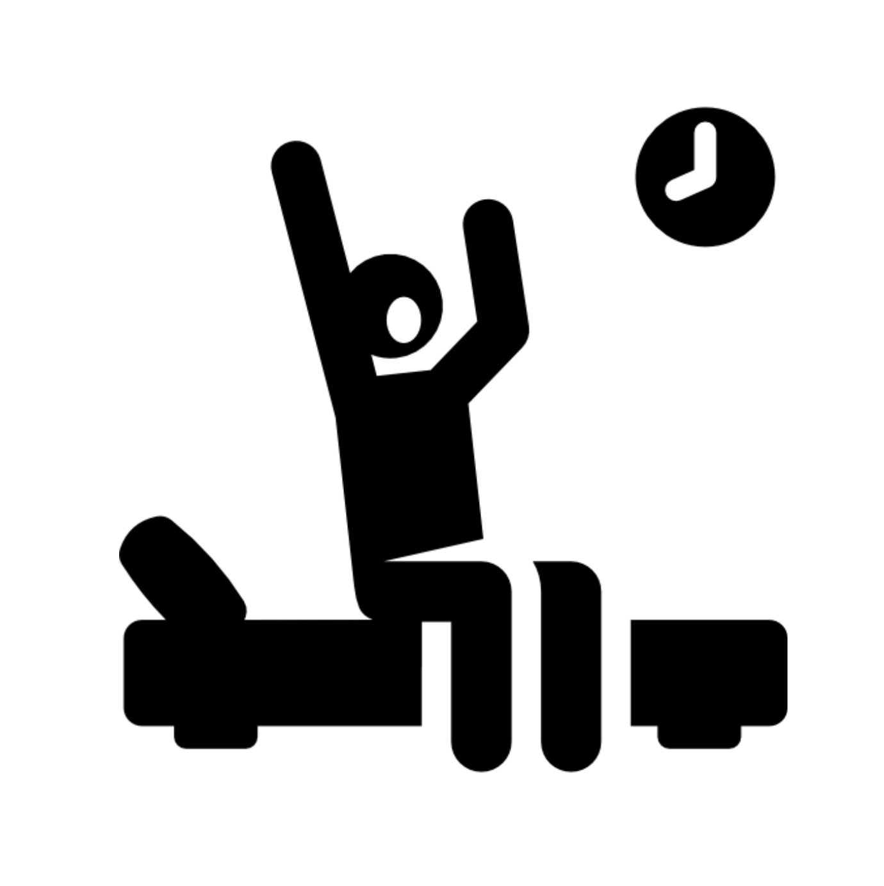
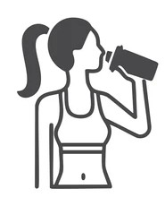
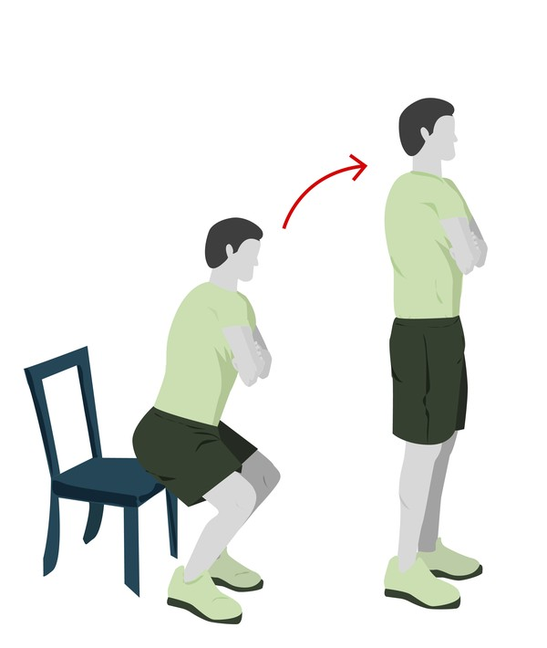
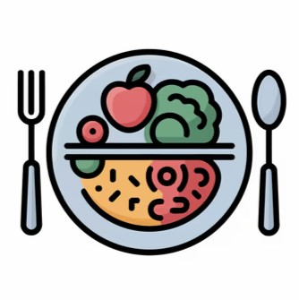
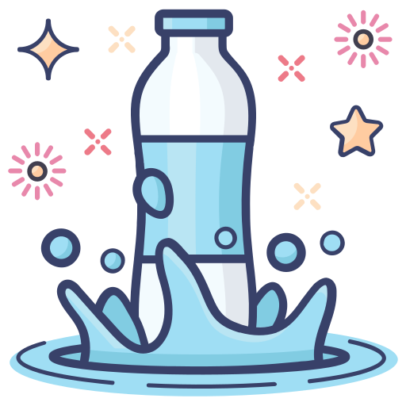
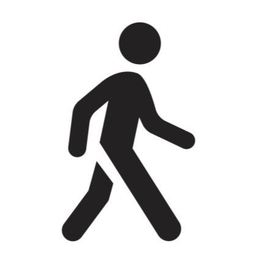
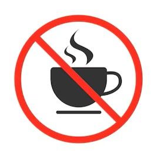
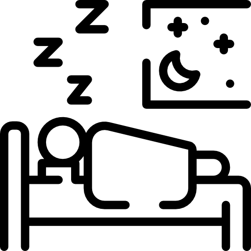

Por que seguir hábitos saudáveis?
Manter rotinas simples ao longo do dia melhora a disposição, fortalece o corpo e ajuda a prevenir problemas de saúde. Quanto mais consistentes forem esses hábitos, melhores serão os resultados no bem-estar físico e mental.
🌅 Pela manhã

Levantar devagar
Alongue-se antes de sair da cama.

Beber água
Ativa o metabolismo.

Café leve
Inclua frutas e fibras.
☀️ Durante o dia

Pausas para mover o corpo
A cada 1–2 horas, levante-se e alongue.

Alimentação equilibrada
Priorize verduras, legumes e refeições leves.

Hidratação constante
Sempre deixe água por perto.

Atividade física
20 a 30 min de caminhada já fazem diferença.
🌇 Final da tarde

Evitar café
Reduza cafeína após as 16h para dormir melhor.

Alongamentos leves
Alivia tensões acumuladas.
🌙 À noite

Jantar leve
Prefira refeições de fácil digestão.

Reduzir telas
Evite celular e TV antes de dormir.

Ritual de sono
Banho morno, leitura ou música leve.

Dormir bem
Entre 7 e 9 horas por noite.